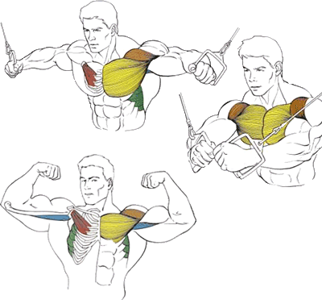

Сведение рук в кроссовере через верхние блоки

Сведение рук на блоках позволяет проработать внутреннюю часть и низ грудных мышц.
Исходное положение:
Встать между стойками тренажера.
Взяться за ручки..
Немного наклониться вперед.
Чуть согнуть руки в локтях.
Техника выполнения:
Одновременно обеими руками притянуть рукоятки примерно до пояса, сделав выдох в крайней точке.
Медленно на вдохе вернуть руки в начальное положение.
Рекомендации:
Спину и ноги старайтесь держать неподвижными, включайте в работу только руки.